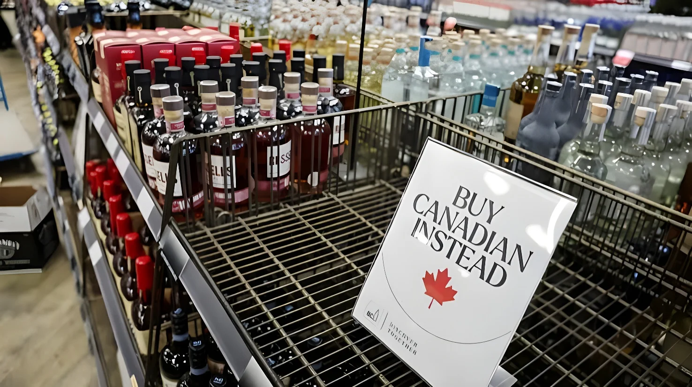

Le 29 septembre 2026 à 0 h 01 (heure de l'Est), l'interdiction d'importer aux États-Unis certains produits canadiens est entrée en vigueur. Décidée le 8 septembre par Donald Trump au titre de la section 338 du Tariff Act de 1930, elle vise environ 967 millions de dollars d'importations annuelles (chiffres de 2025) : surtout des boissons alcoolisées, mais aussi du lactosérum, de la mélasse, de la bière sans alcool et certaines motos. Après les droits de 50 % du 22 août et les contre-tarifs d'Ottawa, le conflit change de nature : on passe du droit de douane à la prohibition.
Le 8 septembre, le président américain a signé cinq proclamations fondées sur la section 338 du Tariff Act de 1930, une loi de la Grande Dépression invoquée pour la première fois cet été contre le Canada. Deux d'entre elles ont remanié, à compter du 15 septembre, les listes de produits frappés par les droits de 50 %. Les trois autres interdisent purement et simplement l'importation, à partir du 29 septembre, de boissons alcoolisées canadiennes conditionnées (bière, vin, cidre, spiritueux), de certains produits laitiers dont le lactosérum, de la mélasse, de la bière sans alcool et des motos de plus de 800 cm³, parmi lesquelles les modèles Can-Am Spyder et Canyon du fabricant québécois BRP.
Washington invoque des « mesures restrictives » canadiennes à l'encontre de ses producteurs d'alcool, d'automobiles et de produits laitiers, ainsi que le retrait des alcools américains des rayons des magasins provinciaux et les contre-tarifs d'Ottawa. Selon ABC News, un responsable de la Maison-Blanche a expliqué que le but était de maintenir des règles du jeu équitables, de décourager les représailles et de protéger la production américaine.
« Ils vont venir nous voir et dire : “Monsieur, nous sommes désolés.” »
— Donald Trump, fin septembre 2026 (traduction de « They're gonna come in and they're gonna say, “Sir, we are sorry.” »)Trois proclamations fondées sur la section 338 annoncent des droits de 50 % sur environ 20 milliards de dollars de produits canadiens, au nom d'une discrimination dénoncée dans l'alcool, les produits laitiers et l'automobile.
Après l'échec des négociations, les droits de 50 % entrent en vigueur. Mark Carney annonce des contre-tarifs « dollar pour dollar ».
Les contre-tarifs canadiens de 15 %, 25 % et 50 % entrent en vigueur. Donald Trump signe les cinq proclamations dont celles qui interdisent les importations.
Les listes de produits taxés sont élargies, et les droits de la section 338 peuvent désormais s'ajouter à ceux de la section 232 : jusqu'à 75 % sur certains produits en acier et en aluminium.
Les trois interdictions d'importation entrent en vigueur.
Le montant est modeste au regard des quelque 381 milliards de dollars de biens canadiens importés par les États-Unis en 2025. L'avocat spécialiste du commerce Patrick Childress rappelle d'ailleurs que, pour beaucoup de ces produits, le droit de 50 % jouait déjà le rôle d'interdiction de fait. Les grandes marques peuvent contourner l'obstacle : Crown Royal, par exemple, peut être importé en vrac puis embouteillé aux États-Unis. Les petits producteurs sont plus exposés : la distillerie ontarienne Wolfhead a suspendu ses expéditions de whisky vers le Michigan.
Côté américain, la coalition Toasts Not Tariffs, qui regroupe 59 organisations, estime que l'interdiction « se répercutera sur l'ensemble du secteur de l'hôtellerie-restauration américain » à l'approche des fêtes. Elle rappelle que, depuis que les provinces canadiennes ont retiré les produits américains de leurs rayons en mars 2025, les exportations américaines de spiritueux vers le Canada ont chuté de 70 % (de 232 à 72 millions de dollars) et celles de vin de 87 %.
| Mesure | Date | Portée |
|---|---|---|
| Droits de la section 338 | 22 août | 50 % sur environ 20 Md$ de produits canadiens |
| Contre-tarifs canadiens | 8 sept. | 15 %, 25 % ou 50 % sur environ 20 Md$ de produits américains |
| Remaniement des listes | 15 sept. | Produits ajoutés, cumul avec la section 232 |
| Interdictions d'importation | 29 sept. | 967 M$ : alcool, lactosérum, mélasse, motos |
Interrogé sur la prédiction de Donald Trump, qui voit le Canada revenir à la table dans trois ou quatre semaines, Mark Carney a ri avant de répondre : « I take note of both comments, how's that? No response to either » (« Je prends note des deux commentaires, ça vous va ? Aucune réponse ni à l'un ni à l'autre »). Le ministre du Commerce Dominic LeBlanc a écarté toute idée d'excuses, et le premier ministre a assuré que son calendrier n'était pas dicté par celui des élections américaines de mi-mandat de novembre. Les canaux restent ouverts, mais les négociations formelles sont suspendues. Pour réduire sa dépendance, Ottawa mise sur d'autres partenaires comme l'Union européenne et l'Inde, et avait déjà promis de répliquer dollar pour dollar après l'échec des pourparlers d'août.
« Pour beaucoup de ces produits, les 50 % agissaient déjà comme une interdiction de fait, en rendant l'importation depuis le Canada vers les États-Unis non rentable. »
— Patrick Childress, avocat spécialiste du commerce (traduction)En visant surtout l'alcool, Washington répond au geste qui avait ouvert le front, le retrait des produits américains des rayons provinciaux, tout en choisissant un secteur où l'effet symbolique dépasse l'effet économique. Mais en passant du tarif à l'interdiction, la Maison-Blanche épuise une partie de ses leviers progressifs : la prochaine étape serait plus lourde, comme les droits de 50 % sur l'automobile prévus au 1er janvier 2027. Du côté canadien, la logique du boycott, déjà ancrée dans l'opinion, risque de se renforcer.
At 12:01 a.m. Eastern on September 29, 2026, a US ban on certain Canadian imports took effect. Ordered on September 8 by Donald Trump under Section 338 of the Tariff Act of 1930, it covers about $967 million in annual imports (2025 figures): mostly alcoholic beverages, but also whey, molasses, non-alcoholic beer and some motorcycles. After the 50% duties of August 22 and Ottawa's counter-tariffs, the conflict changes in kind: from tariffs to outright prohibition.
On September 8, the US president signed five proclamations based on Section 338 of the Tariff Act of 1930, a Depression-era law invoked against Canada for the first time this summer. Two of them reshuffled, from September 15, the lists of goods hit by the 50% duties. The other three outright ban, from September 29, imports of packaged Canadian alcoholic beverages (beer, wine, cider, spirits), certain dairy products including whey, molasses, non-alcoholic beer and motorcycles over 800 cc, among them the Can-Am Spyder and Canyon models made by Quebec's BRP.
Washington cites Canadian "restrictive" measures against its alcohol, automotive and dairy producers, as well as the removal of American alcohol from provincial store shelves and Ottawa's counter-tariffs. According to ABC News, a White House official said the aim was to keep a level playing field, deter retaliation and protect American production.
"They're gonna come in and they're gonna say, 'Sir, we are sorry.'"
— Donald Trump, late September 2026Three Section 338 proclamations announce 50% duties on about $20 billion of Canadian goods, citing alleged discrimination in alcohol, dairy and autos.
After talks collapse, the 50% duties take effect. Mark Carney announces "dollar-for-dollar" counter-tariffs.
Canada's 15%, 25% and 50% counter-tariffs take effect. Donald Trump signs the five proclamations, including those banning imports.
The lists of taxed goods are widened, and Section 338 duties can now stack on top of Section 232 duties: up to 75% on some steel and aluminum products.
The three import bans take effect.
The amount is modest next to the roughly $381 billion of Canadian goods the United States imported in 2025. Trade attorney Patrick Childress notes that for many of these products, the 50% duty was already acting as a de facto ban. Big brands can work around it: Crown Royal, for instance, can be imported in bulk and bottled in the United States. Smaller producers are more exposed: Ontario's Wolfhead Distillery has suspended whisky shipments to Michigan.
On the American side, the Toasts Not Tariffs Coalition, which represents 59 organizations, says the ban "will ripple throughout the U.S. hospitality sector" as the holiday season approaches. It points out that since Canadian provinces pulled American products from their shelves in March 2025, US spirits exports to Canada have fallen 70% (from $232 million to $72 million) and wine exports by 87%.
| Measure | Date | Scope |
|---|---|---|
| Section 338 duties | Aug 22 | 50% on about $20bn of Canadian goods |
| Canadian counter-tariffs | Sept 8 | 15%, 25% or 50% on about $20bn of US goods |
| List revisions | Sept 15 | Goods added, stacking with Section 232 |
| Import bans | Sept 29 | $967M: alcohol, whey, molasses, motorcycles |
Asked about Donald Trump's prediction that Canada will come back to the table in three or four weeks, Mark Carney laughed before answering: "I take note of both comments, how's that? No response to either." Trade Minister Dominic LeBlanc ruled out any apology, and the prime minister said his timing is not dictated by the US midterm elections in November. Channels remain open, but formal negotiations are suspended. To reduce its dependence, Ottawa is courting other partners such as the European Union and India, and had already promised to match US tariffs dollar for dollar after the August talks failed.
"For a lot of these goods, the 50% was already acting as a de facto ban by making importation from Canada into the United States uneconomical."
— Patrick Childress, trade attorneyBy targeting mostly alcohol, Washington answers the move that opened the front, the removal of American products from provincial shelves, while picking a sector where the symbolic effect exceeds the economic one. But by moving from tariffs to bans, the White House uses up some of its gradual levers: the next step would be heavier, such as the announced rise in auto duties scheduled for January 1, 2027. On the Canadian side, the logic of the boycott, already rooted in public opinion, is likely to harden.